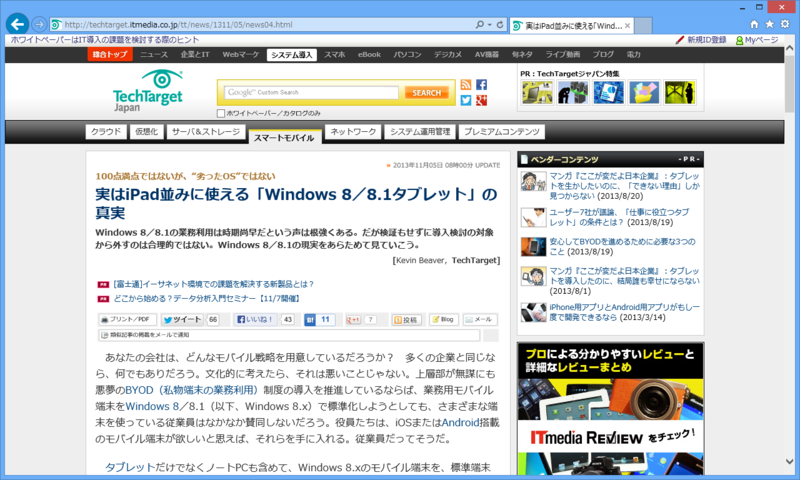
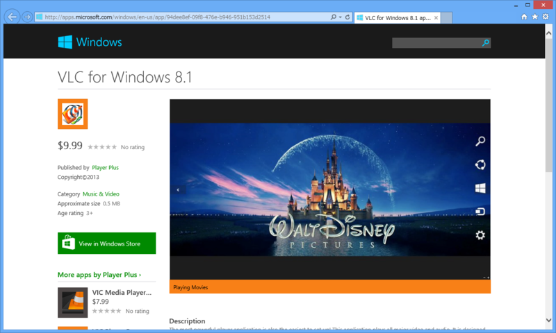

Windows ストアのアプリケーションはマルウェア対策も含めて悲惨な状況であるらしい
公開日：

実はiPad並みに使える「Windows 8／8.1タブレット」の真実 ? TechTargetジャパン スマートモバイル URL windowsストアのマルウェア対策が悲惨って、全然聞いたこと無いけどどこの話なんだろう。
元記事も読んでみると、Windowsストアにアンチウイルスアプリが無いことを言ってるようです。無知もはなはだしい。URLRT @SH1N0 … windowsストアのマルウェア対策が悲惨って、全然聞いたこと無いけどどこの話なんだろう。
2013-11-05 14:21:32 via web to @SH1N0
ちょっと興味深かったので。ともあれ、元記事の当該部分を引用してみよう……と思ったのだけど、現在は会員登録とログインが必要になっているので遠慮する。Twitter でこのリンクを閲覧したときはログインなど必要なかったのだが。まぁ、とにかく、この記事には
Windows ストアのアプリケーションはマルウェア対策も含めて悲惨な状況
などと書いてあったらしい（はてブより引用）。本当に“悲惨”なのかどうかは @biac さんのツイートをたどって勉強するとよいのだけど、それが面倒な人向けに簡単にまとめるとこうだ。
- 身元保証:“Windows ストア”による審査の過程で怪しいアプリは基本的に除外される。
- 詐称対策: ストア アプリは署名されるので、配布 → インストールの過程ですり替えは起こりづらい
- 動作制限: サンドボックス（隔離環境、AppContainer（アプリ コンテナー））で実行。アプリがプライバシーにかかわる機能にアクセスする場合は、ユーザーの許可が必要
基本的に、買ったばっかりのパソコンは安全なもので、悪意のあるソフトは入っていないハズ*1。つまり、セキュリティ問題の原因というのは、新しくて安全なパソコンをネットワークにつなぎ、ユーザーが訳も分からず外部から怪しいアプリやデータを取り込んでしまうことであると言える*2。なので、悪いアプリをダウンロードしない・させない・万が一ダウンロードされても自由に活動させないというのが防御の基本となる。
もちろんこれには欠点もある。
- 病気でいる自由がない: 多少怪しいアプリでも入れたい時はある
- お金がかかる: 審査や署名はタダではない。これはユーザーか開発者のどちらかが負担せねばならない
- 無茶をする自由がない: システムへフックやほかのアプリケーションの操作・連携・対話が制限される
まぁ、上級者（自称を含む）にとってはココが不満に感じられて叩かれるのだけど、そういうひとのためにはデスクトップ環境が残されているので問題はない（ARM ではほとんど Office 専用だけど）。
少し話が逸れた。
誤解を恐れずにバッサリ言ってしまえば、ストア アプリにウイルス対策ソフトなど要らない。
アイフォンはストア経由でアプリを出しており、アプリの起動形態がサンドボックスで行うことをセキュリティ上の売りにしている。が、このサンドボックスが仇となり、システム全体をチェックするセキュリティソフトを作れない。したがってストアのチェックから漏れた危険には為す術がないらしい。
2013-11-01 00:51:31 via web
無論「ストアの審査をすり抜けた場合はどうなるの？」という疑問はあるだろうけれど、それは報告があり次第ストアでの提供が中止され、ユーザー環境からも削除されるということになるのだろう。こういう仕組みは iPhone や Android でも採用されていて*3最近のトレンドでもあるし、ヒューリスティック解析やクラウド連携を謳うウイルス対策ソフトだって究極的には“アカンやつ”をみつけてあとからブロックしているに過ぎない。いかにうまく・はやく“アカンやつ”をみつけて素早く・安全に隔離・削除するかというだけの話だ。
パソコンといえばセキュリティだのなんだのめんどくさいというイメージをもっているユーザーは少なくない思うけれど、Windows ストア プラットフォームではあんまりそういう心配はせずに済む。そう思えば、これまでのアプリに比べて多少不便なのも我慢できるのではないかな。品質が十分に熟していないのも、時間が解決してくれるのだろう。

ただ、ユーザーとして注意したいのはこういうケース。
「VLC」というのは有名なフリーのメディアプレイヤーで、ストア アプリ版の開発も進行中だ（確か寄付を募っていたはず）……が、まだリリースはされていない。そこに付け込んで、「VLC media Player」の名前を騙った有償アプリがいくつかストアに登録されている。内容はおそらく OS で標準サポートされたフォーマットの動画を再生するだけのアプリだろう。本家「VLC」はなんでも再生できて便利なのだけど*4。
「VLC media Player」という名前が商標上どのような扱いになっているのかは知らない。けれど、大胆不敵にも有名ソフトの名前を騙ったこのアプリが仮に法的な理由で削除されたとしても、機能的にちゃんと動きさえすれば、「VIC」だの「WLC」だの「ULC」だのといった“亜種”をストア側で一律・完全に排除してしまうのは難しい。また、ユーザーが好き好んでこのようなアプリを購入するのを止めるのも難しい。このアプリの場合はほとんど詐欺だけど、世の中にはお金持ちをアピールすためだけに無用なものが高額で取引されているケースが少なくない。
約1000ドルで提供されていた何の役にも立たない『iPhone』アプリ、『I Am Rich』を購入した者は、LA Timesの記事によれば8名にのぼる。8名のうち6名は米国在住で、残りはフランスとドイツだという。
まぁ、アプリよりも人間のほうがよっぽど“脆弱”ということなのですかね。